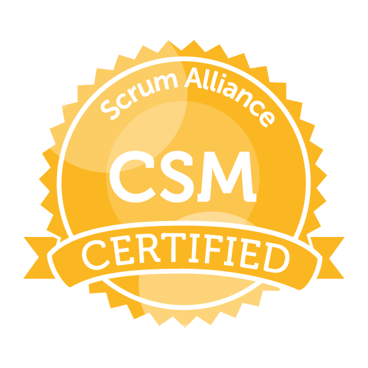

In December of 2018, I decided to better myself and my development practices by getting ScrumMaster
Certified (CSM)
by ScrumAlliance.
You can view my public certificate here.
Serendipitously met Matthew Parks, owner of Bovsi Studios, at Grassroots Kava House. He invited me to be a Senior Software Engineer at his growing company. I help artchitect applications, plan projects, and manage a team of developers.
My first year and half at Presence.io (formerly Check I’m Here) involved me
and
a
Senior Developer re-architecting an
MVP application. The application we designed was a .NETCORE C# MVC Framework web app with a SQL database,
AngularJS 1.6 front-end framework using the component-router and Typescript, and a C# RESTful API with the
repository pattern design.
During my time with the company, I was the lead developer for the company’s mobile API and the go-to developer
for
general C# or SQL questions. I worked closely with the customer service team to help test the system’s UI and
APIs. I also worked with the CEO / product owner (Reuben
Pressman) on a daily basis to gather requirements for new features and
define business logic for existing features.
I also helped upgrade and maintain the Node.js application that our customer service team used internally.
I was the IT administrator at Applied Technology Resources
handling
tasks such as creating new employee accounts, preparing computers for new
users, doing general Windows repairs on employees’ computers, and troubleshooting the network.
Due to my skill set I was able to transition this into a more senior role creating queries for the SQL and
MySQL
databases, updating/repairing custom written .NET C# and VB programs, updating/maintaining the Microsoft
Access
program that employees used, and creating various applications that helped the company’s processes.
After college, I moved to St Petersburg, FL because one of my brothers lived nearby. He and his wife helped me get on my feet until I was able to live on my own in the greatest city in Florida.
Graduated from The University of Alabama. I completed 1.5 years of computer programming classes before realizing the school's program was not geared towards marketable skills. I moved my credits to the College of Business and I finished my Marketing/Business Degree with a 3.5 GPA.
Moved to Tuscaloosa, Alabama for college at The University of Alabama. Roll Tide!
Attended Wallace Community College with a focus on Computer Science. Graduated with an Associates in Science. Worked at Circuit City as a Lead Sales Associate for the Car Audio department.
I attended Northview Highschool in Dothan, AL. I was in a mix of advanced placement classes, band classes, and extra-curricular technical classes. During this time, I worked as a 3rd Key Holder at Electronics Botique (aka EB Games) in Wiregrass Commons Mall. This was a multi-million dollar store with some of the highest sales and foot traffic than any other store in our region.
Born in Dothan, Alabama to the wonderful Anne Taylor and Danny Taylor. Danny started and owned Sentry Electronics, a home and eventually commerical security electronics and installation company. Anne quit the trucking industry in the early 1990s to help Danny fulfill his dream of owning his own company. Eventually every member of the Taylor family worked for Sentry Electronics.